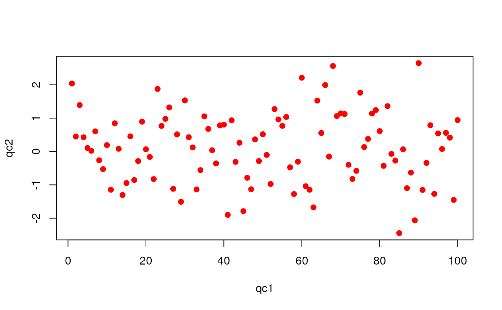

"QcMetrics" class for collections of QC itemsQcMetrics-class.RdData structure for storing lists of QcMetric items.
Objects can be created using the constructor QcMetrics(...), where
slots are assigned individually. See example below.
In a standardised quality control pipeline, the QcMetrics and
QcMetric object are not generated manually. Their creation is
delegated to a wrapper function that reads a specific type of files,
parses the data, produces the individual QcMetric instances
and, eventually, the QcMetric object. See the package vignette
for details and examples.
metadata:Object of class
QcMetadata storing the
metadata of the object. This list would typically contain
the input file the data was read from, the date the object was
generated, ... or fully fledged minimum information
descriptions (see MIAxE), when available.
qcdata:Object of class "list" storing all the
individual QcMetric instances.
signature(x = "QcMetrics"): subsets x as a
new QcMetrics instance.
signature(x = "QcMetrics"): extracts a single
QcMetric instance.
signature(x = "QcMetrics"): returns the number
of QcMetric instances populate x.
signature(x = "QcMetrics"): return the
object's metadata list. Also available as mdata.
signature(x = "QcMetrics", value =
"list"): sets the objects metadata. Also available as
mdata.
signature(x = "QcMetric", value =
"QcMetadata"): sets the objects metadata. Also available as
mdata.
signature(object = "QcMetrics"): returns a
character vector of length length(object) with the names
of the QcMetric instances.
signature(object = "QcMetrics", x = "missing"):
returns a list of all QcMetric instances.
signature(object = "QcMetrics", value = "list"):
sets the qcdata of object.
signature(object = "QcMetrics"): prints a short
textual description of object.
signature(object = "QcMetrics"): returns a
vector of quality statuses (logicals).
signature(object = "QcMetrics", value =
"logical"): sets the quality statuses. Length of value
and object must be identical.
signature(object = "QcMetrics", "data.frame"):
coerces object as a length(object) by 2 data frame
with the respective QcMetric instances names and statuses.
signature(object = "QcMetrics"): ...
Laurent Gatto
The QcMetric class for individual QC items.
#> #> QcMtrc> (qc <- QcMetric()) #> Object of class "QcMetric" #> Name: A QcMetric prototype #> Status: NA #> Data: empty #> #> QcMtrc> qcdata(qc) #> character(0) #> #> QcMtrc> try(qcdata(qc, "x")) #> Error in qcdata(qc, "x") : No qcdata 'x' in object. #> #> QcMtrc> x <- rnorm(10) #> #> QcMtrc> qcdata(qc, "qc1") <- x #> #> QcMtrc> qcdata(qc, "qc2") <- 1:10 #> #> QcMtrc> qcdata(qc) #> [1] "qc1" "qc2" #> #> QcMtrc> all.equal(qcdata(qc, "qc1"), x) #> [1] TRUE #> #> QcMtrc> all.equal(qcdata(qc, "qc2"), 1:10) #> [1] TRUE #> #> QcMtrc> name(qc) <- "My test QcMetric" #> #> QcMtrc> description(qc) <- "This qc metric describes bla bla bla, indicating possible issues in the third step of protocol bla bla bla." #> #> QcMtrc> status(qc) <- FALSE #> #> QcMtrc> qc #> Object of class "QcMetric" #> Name: My test QcMetric #> Description: #> This qc metric describes bla bla bla, indicating possible issues in the #> third step of protocol bla bla bla. #> Status: FALSE #> Data: qc1 qc2 #> #> QcMtrc> ## or #> QcMtrc> e <- new.env() #> #> QcMtrc> e$qc1 <- rnorm(100) #> #> QcMtrc> e$qc2 <- 1:100 #> #> QcMtrc> qcdata(qc) <- e #> #> QcMtrc> length(qcdata(qc, "qc1")) #> [1] 100 #> #> QcMtrc> head(qcdata(qc, "qc2")) #> [1] 1 2 3 4 5 6 #> #> QcMtrc> show(qc) #> Object of class "QcMetric" #> Name: My test QcMetric #> Description: #> This qc metric describes bla bla bla, indicating possible issues in the #> third step of protocol bla bla bla. #> Status: FALSE #> Data: qc1 qc2 #> #> QcMtrc> show(qc) <- function(object) cat("Updated show method\n") #> #> QcMtrc> show(qc) #> Updated show method #> #> QcMtrc> show(qc) <- qcshow #> #> QcMtrc> qc #> Object of class "QcMetric" #> Name: My test QcMetric #> Description: #> This qc metric describes bla bla bla, indicating possible issues in the #> third step of protocol bla bla bla. #> Status: FALSE #> Data: qc1 qc2 #> #> QcMtrc> plot(qc)#> Warning: No specific plot function defined#> #> QcMtrc> plot(qc) <- #> QcMtrc+ function(object, ...) #> QcMtrc+ plot(qcdata(object, "qc2"), #> QcMtrc+ qcdata(object, "qc1"), #> QcMtrc+ xlab = "qc1", #> QcMtrc+ ylab = "qc2", #> QcMtrc+ ...) #> #> QcMtrc> plot(qc)#> #> QcMtrc> plot(qc, col = "red", pch = 19)#> #> QcMtrc> ## Not run: #> QcMtrc> ##D ## generate a report #> QcMtrc> ##D qcReport(qcm) #> QcMtrc> ## End(Not run) #> QcMtrc> #> QcMtrc> #> QcMtrc>show(qc)#> Object of class "QcMetric" #> Name: My test QcMetric #> Description: #> This qc metric describes bla bla bla, indicating possible issues in the #> third step of protocol bla bla bla. #> Status: FALSE #> Data: qc1 qc2qc2 <- QcMetric(name = "My other metric", status = TRUE) qcdata(qc2, "x") <- rnorm(100) qcdata(qc2, "k") <- rep(LETTERS[1:2], 50) plot(qc2) <- function(object, ...) { require("lattice") d <- data.frame(x = qcdata(object, "x"), k = qcdata(object, "k")) bwplot(x ~ k, data = d) } qcm <- QcMetrics(qcdata = list(qc, qc2)) qcm#> Object of class "QcMetrics" #> containing 2 QC metrics. #> and no metadata variables.qcm[1] ## a QcMetrics instance#> Object of class "QcMetrics" #> containing 1 QC metrics. #> and no metadata variables.qcm[[1]] ## a single QcMetric#> Object of class "QcMetric" #> Name: My test QcMetric #> Description: #> This qc metric describes bla bla bla, indicating possible issues in the #> third step of protocol bla bla bla. #> Status: FALSE #> Data: qc1 qc2metadata(qcm)#> list()metadata(qcm) <- QcMetadata(list(name = "Prof. Who", lab = "Cabin University")) ## or, shorter but equivalent metadata(qcm) <- list(name = "Prof. Who", lab = "Cabin University") metadata(qcm) ## or mdata(qcm)#> $name #> [1] "Prof. Who" #> #> $lab #> [1] "Cabin University" #>## update metadata metadata(qcm) <- list(lab = "Big lab", ## updated uni = "Cabin University") ## added mdata(qcm)#> $name #> [1] "Prof. Who" #> #> $lab #> [1] "Big lab" #> #> $uni #> [1] "Cabin University" #>